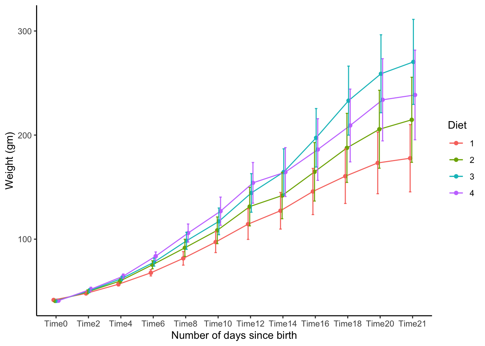
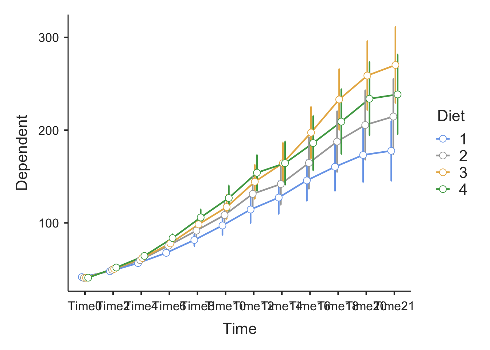
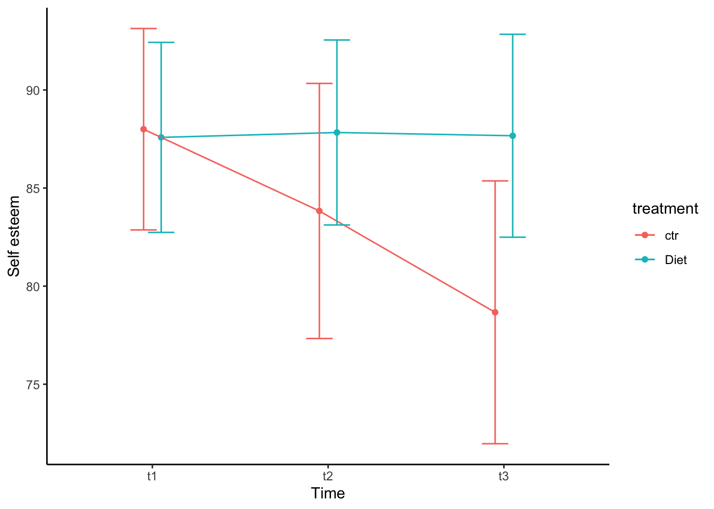

# load all libraries for this tutorial
library(jmv)
library(psych)
library(car)
library(tidyverse)
library(afex)
library(effectsize)
library(emmeans)
library(datarium)ใน tutorial นี้เราจะใช้ข้อมูล ChickWeight จาก dataset ของ R ข้อมูลชุดนี้แสดงน้ำหนักของลูกไก่ weight วัดซ้ำ 12 ครั้ง Time ภายใต้เงื่อนอาหาร 4 แบบ Diet โดยมีหมายเลขลูกไก่คือ Chick
ข้อมูลชุดนี้เป็นข้อมูลแบบยาว (long format) ที่แต่ละแถวแสดงการสังเกต (observation) แต่ละช่วงเวลาซ้อนอยู่ในตัวลูกไก่
ตัวแปรอิสระแบบภายในกลุ่มตัวอย่าง คือ Time และตัวแปรอิสระแบบระหว่างกลุ่มตัวอย่างคือ Diet ตัวแปรตามคือ Weight
data("ChickWeight")
head(ChickWeight, n = 25)## Grouped Data: weight ~ Time | Chick
## weight Time Chick Diet
## 1 42 0 1 1
## 2 51 2 1 1
## 3 59 4 1 1
## 4 64 6 1 1
## 5 76 8 1 1
## 6 93 10 1 1
## 7 106 12 1 1
## 8 125 14 1 1
## 9 149 16 1 1
## 10 171 18 1 1
## 11 199 20 1 1
## 12 205 21 1 1
## 13 40 0 2 1
## 14 49 2 2 1
## 15 58 4 2 1
## 16 72 6 2 1
## 17 84 8 2 1
## 18 103 10 2 1
## 19 122 12 2 1
## 20 138 14 2 1
## 21 162 16 2 1
## 22 187 18 2 1
## 23 209 20 2 1
## 24 215 21 2 1
## 25 43 0 3 1# Convert to factor
ChickWeight$Chick <- factor(ChickWeight$Chick)
ChickWeight$Diet <- factor(ChickWeight$Diet)
ChickWeight$Time <- factor(ChickWeight$Time)
# Rename labels for Time
time_label <- paste0("Time", levels(ChickWeight$Time))
levels(ChickWeight$Time) <- time_label
str(ChickWeight)## Classes 'nfnGroupedData', 'nfGroupedData', 'groupedData' and 'data.frame': 578 obs. of 4 variables:
## $ weight: num 42 51 59 64 76 93 106 125 149 171 ...
## $ Time : Factor w/ 12 levels "Time0","Time2",..: 1 2 3 4 5 6 7 8 9 10 ...
## $ Chick : Ord.factor w/ 50 levels "18"<"16"<"15"<..: 15 15 15 15 15 15 15 15 15 15 ...
## $ Diet : Factor w/ 4 levels "1","2","3","4": 1 1 1 1 1 1 1 1 1 1 ...
## - attr(*, "formula")=Class 'formula' language weight ~ Time | Chick
## .. ..- attr(*, ".Environment")=<environment: R_EmptyEnv>
## - attr(*, "outer")=Class 'formula' language ~Diet
## .. ..- attr(*, ".Environment")=<environment: R_EmptyEnv>
## - attr(*, "labels")=List of 2
## ..$ x: chr "Time"
## ..$ y: chr "Body weight"
## - attr(*, "units")=List of 2
## ..$ x: chr "(days)"
## ..$ y: chr "(gm)"สำหรับการวิเคราะห์ mixed design นี้เราจะไม่ใช้คำสั่ง base R เนื่องจาก base R จะใช้ SS Type I แต่ว่าในกรณีที่กลุ่มตัวอย่างไม่เท่ากันในแต่ละเงื่อนไข ในกรณีที่มีตัวแปรมากกว่า 1 ตัว (เช่น การวิเคราะห์ปฏิสัมพันธ์ระหว่างตัวแปรสองตัว) ควรใช้ SS Type II หรือ Type III ดังนั้นเราจะใช้ afex ในการคำนวณแทน
เนื่องจากมีตัวแปรภายในบุคคล หนึ่งตัว คือ เวลา Time จึงกำหนดให้ Error() เป็น เวลาในการวัด ซ้อนอยู่ในลูกไก่แต่ละตัว Error(Chick/Time)
chick.afex <- aov_car(weight ~ Diet*Time + Error(Chick/Time), data = ChickWeight) ## Warning: Missing values for following ID(s):
## 18, 16, 15, 8, 44
## Removing those cases from the analysis.summary(chick.afex) # regular ANOVA##
## Univariate Type III Repeated-Measures ANOVA Assuming Sphericity
##
## Sum Sq num Df Error SS den Df F value Pr(>F)
## (Intercept) 8404690 1 313495 41 1099.1955 < 2.2e-16 ***
## Diet 116404 3 313495 41 5.0746 0.004428 **
## Time 2023644 11 295323 451 280.9451 < 2.2e-16 ***
## Diet:Time 81375 33 295323 451 3.7658 9.341e-11 ***
## ---
## Signif. codes: 0 '***' 0.001 '**' 0.01 '*' 0.05 '.' 0.1 ' ' 1
##
##
## Mauchly Tests for Sphericity
##
## Test statistic p-value
## Time 2.6754e-17 1.0326e-251
## Diet:Time 2.6754e-17 1.0326e-251
##
##
## Greenhouse-Geisser and Huynh-Feldt Corrections
## for Departure from Sphericity
##
## GG eps Pr(>F[GG])
## Time 0.11414 < 2e-16 ***
## Diet:Time 0.11414 0.01046 *
## ---
## Signif. codes: 0 '***' 0.001 '**' 0.01 '*' 0.05 '.' 0.1 ' ' 1
##
## HF eps Pr(>F[HF])
## Time 0.1160483 8.633944e-25
## Diet:Time 0.1160483 1.001674e-02nice(chick.afex, es = "pes") # GG correction + partial eta squared## Anova Table (Type 3 tests)
##
## Response: weight
## Effect df MSE F pes p.value
## 1 Diet 3, 41 7646.22 5.07 ** .271 .004
## 2 Time 1.26, 51.48 5736.71 280.95 *** .873 <.001
## 3 Diet:Time 3.77, 51.48 5736.71 3.77 * .216 .010
## ---
## Signif. codes: 0 '***' 0.001 '**' 0.01 '*' 0.05 '+' 0.1 ' ' 1
##
## Sphericity correction method: GGeta_squared(chick.afex)## # Effect Size for ANOVA (Type III)
##
## Parameter | Eta2 (partial) | 90% CI
## -----------------------------------------
## Diet | 0.27 | [0.06, 0.42]
## Time | 0.87 | [0.86, 0.89]
## Diet:Time | 0.22 | [0.11, 0.23]chick.emm <- emmeans(chick.afex, ~ Time | Diet) # Mean for each time split by Diet
chick.emm## Diet = 1:
## Time emmean SE df lower.CL upper.CL
## Time0 41.6 0.278 41 41.0 42.1
## Time2 47.9 0.715 41 46.4 49.3
## Time4 56.7 0.786 41 55.1 58.3
## Time6 67.7 1.497 41 64.7 70.7
## Time8 81.6 3.222 41 75.1 88.1
## Time10 97.2 5.024 41 87.1 107.4
## Time12 114.4 7.258 41 99.8 129.1
## Time14 127.3 8.721 41 109.7 144.9
## Time16 145.8 10.997 41 123.6 168.0
## Time18 160.5 12.983 41 134.3 186.7
## Time20 173.2 14.661 41 143.6 202.9
## Time21 177.8 15.995 41 145.4 210.1
##
## Diet = 2:
## Time emmean SE df lower.CL upper.CL
## Time0 40.7 0.351 41 40.0 41.4
## Time2 49.4 0.905 41 47.6 51.2
## Time4 59.8 0.994 41 57.8 61.8
## Time6 75.4 1.894 41 71.6 79.2
## Time8 91.7 4.076 41 83.5 99.9
## Time10 108.5 6.354 41 95.7 121.3
## Time12 131.3 9.180 41 112.8 149.8
## Time14 141.9 11.031 41 119.6 164.2
## Time16 164.7 13.910 41 136.6 192.8
## Time18 187.7 16.423 41 154.5 220.9
## Time20 205.6 18.545 41 168.1 243.1
## Time21 214.7 20.233 41 173.8 255.6
##
## Diet = 3:
## Time emmean SE df lower.CL upper.CL
## Time0 40.8 0.351 41 40.1 41.5
## Time2 50.4 0.905 41 48.6 52.2
## Time4 62.2 0.994 41 60.2 64.2
## Time6 77.9 1.894 41 74.1 81.7
## Time8 98.4 4.076 41 90.2 106.6
## Time10 117.1 6.354 41 104.3 129.9
## Time12 144.4 9.180 41 125.9 162.9
## Time14 164.5 11.031 41 142.2 186.8
## Time16 197.4 13.910 41 169.3 225.5
## Time18 233.1 16.423 41 199.9 266.3
## Time20 258.9 18.545 41 221.4 296.4
## Time21 270.3 20.233 41 229.4 311.2
##
## Diet = 4:
## Time emmean SE df lower.CL upper.CL
## Time0 40.9 0.370 41 40.1 41.6
## Time2 51.9 0.953 41 50.0 53.8
## Time4 64.4 1.047 41 62.3 66.6
## Time6 83.7 1.996 41 79.6 87.7
## Time8 105.9 4.296 41 97.2 114.6
## Time10 126.9 6.698 41 113.4 140.4
## Time12 154.1 9.677 41 134.6 173.7
## Time14 164.4 11.627 41 141.0 187.9
## Time16 186.1 14.662 41 156.5 215.7
## Time18 209.2 17.311 41 174.3 244.2
## Time20 233.9 19.548 41 194.4 273.4
## Time21 238.6 21.327 41 195.5 281.6
##
## Confidence level used: 0.95pairs(chick.emm, simple = "Diet") # pairwise comparisons for simple effect of Diet at each time point## Time = Time0:
## contrast estimate SE df t.ratio p.value
## 1 - 2 0.8625 0.448 41 1.927 0.2327
## 1 - 3 0.7625 0.448 41 1.704 0.3348
## 1 - 4 0.6736 0.463 41 1.456 0.4726
## 2 - 3 -0.1000 0.496 41 -0.201 0.9971
## 2 - 4 -0.1889 0.510 41 -0.370 0.9824
## 3 - 4 -0.0889 0.510 41 -0.174 0.9981
##
## Time = Time2:
## contrast estimate SE df t.ratio p.value
## 1 - 2 -1.5250 1.153 41 -1.323 0.5542
## 1 - 3 -2.5250 1.153 41 -2.190 0.1431
## 1 - 4 -4.0139 1.192 41 -3.368 0.0087
## 2 - 3 -1.0000 1.279 41 -0.782 0.8623
## 2 - 4 -2.4889 1.314 41 -1.894 0.2465
## 3 - 4 -1.4889 1.314 41 -1.133 0.6716
##
## Time = Time4:
## contrast estimate SE df t.ratio p.value
## 1 - 2 -3.1125 1.267 41 -2.457 0.0822
## 1 - 3 -5.5125 1.267 41 -4.352 0.0005
## 1 - 4 -7.7569 1.309 41 -5.924 <.0001
## 2 - 3 -2.4000 1.405 41 -1.708 0.3328
## 2 - 4 -4.6444 1.444 41 -3.217 0.0130
## 3 - 4 -2.2444 1.444 41 -1.555 0.4154
##
## Time = Time6:
## contrast estimate SE df t.ratio p.value
## 1 - 2 -7.7125 2.414 41 -3.194 0.0138
## 1 - 3 -10.2125 2.414 41 -4.230 0.0007
## 1 - 4 -15.9792 2.496 41 -6.403 <.0001
## 2 - 3 -2.5000 2.678 41 -0.933 0.7872
## 2 - 4 -8.2667 2.752 41 -3.004 0.0226
## 3 - 4 -5.7667 2.752 41 -2.096 0.1716
##
## Time = Time8:
## contrast estimate SE df t.ratio p.value
## 1 - 2 -10.1375 5.196 41 -1.951 0.2233
## 1 - 3 -16.8375 5.196 41 -3.241 0.0122
## 1 - 4 -24.3264 5.370 41 -4.530 0.0003
## 2 - 3 -6.7000 5.764 41 -1.162 0.6536
## 2 - 4 -14.1889 5.922 41 -2.396 0.0938
## 3 - 4 -7.4889 5.922 41 -1.265 0.5902
##
## Time = Time10:
## contrast estimate SE df t.ratio p.value
## 1 - 2 -11.2500 8.100 41 -1.389 0.5134
## 1 - 3 -19.8500 8.100 41 -2.451 0.0834
## 1 - 4 -29.6389 8.373 41 -3.540 0.0054
## 2 - 3 -8.6000 8.987 41 -0.957 0.7743
## 2 - 4 -18.3889 9.233 41 -1.992 0.2077
## 3 - 4 -9.7889 9.233 41 -1.060 0.7153
##
## Time = Time12:
## contrast estimate SE df t.ratio p.value
## 1 - 2 -16.8625 11.703 41 -1.441 0.4818
## 1 - 3 -29.9625 11.703 41 -2.560 0.0654
## 1 - 4 -39.6736 12.096 41 -3.280 0.0110
## 2 - 3 -13.1000 12.983 41 -1.009 0.7451
## 2 - 4 -22.8111 13.339 41 -1.710 0.3316
## 3 - 4 -9.7111 13.339 41 -0.728 0.8853
##
## Time = Time14:
## contrast estimate SE df t.ratio p.value
## 1 - 2 -14.5875 14.061 41 -1.037 0.7287
## 1 - 3 -37.1875 14.061 41 -2.645 0.0540
## 1 - 4 -37.1319 14.534 41 -2.555 0.0662
## 2 - 3 -22.6000 15.600 41 -1.449 0.4771
## 2 - 4 -22.5444 16.027 41 -1.407 0.5025
## 3 - 4 0.0556 16.027 41 0.003 1.0000
##
## Time = Time16:
## contrast estimate SE df t.ratio p.value
## 1 - 2 -18.8875 17.731 41 -1.065 0.7123
## 1 - 3 -51.5875 17.731 41 -2.909 0.0286
## 1 - 4 -40.2986 18.328 41 -2.199 0.1406
## 2 - 3 -32.7000 19.671 41 -1.662 0.3563
## 2 - 4 -21.4111 20.210 41 -1.059 0.7157
## 3 - 4 11.2889 20.210 41 0.559 0.9437
##
## Time = Time18:
## contrast estimate SE df t.ratio p.value
## 1 - 2 -27.2000 20.935 41 -1.299 0.5687
## 1 - 3 -72.6000 20.935 41 -3.468 0.0066
## 1 - 4 -48.7222 21.639 41 -2.252 0.1266
## 2 - 3 -45.4000 23.226 41 -1.955 0.2218
## 2 - 4 -21.5222 23.862 41 -0.902 0.8038
## 3 - 4 23.8778 23.862 41 1.001 0.7498
##
## Time = Time20:
## contrast estimate SE df t.ratio p.value
## 1 - 2 -32.3500 23.640 41 -1.368 0.5259
## 1 - 3 -85.6500 23.640 41 -3.623 0.0043
## 1 - 4 -60.6389 24.435 41 -2.482 0.0779
## 2 - 3 -53.3000 26.226 41 -2.032 0.1930
## 2 - 4 -28.2889 26.945 41 -1.050 0.7214
## 3 - 4 25.0111 26.945 41 0.928 0.7899
##
## Time = Time21:
## contrast estimate SE df t.ratio p.value
## 1 - 2 -36.9500 25.792 41 -1.433 0.4868
## 1 - 3 -92.5500 25.792 41 -3.588 0.0047
## 1 - 4 -60.8056 26.659 41 -2.281 0.1193
## 2 - 3 -55.6000 28.613 41 -1.943 0.2264
## 2 - 4 -23.8556 29.398 41 -0.811 0.8487
## 3 - 4 31.7444 29.398 41 1.080 0.7036
##
## P value adjustment: tukey method for comparing a family of 4 estimateschick.emm.summary <- summary(chick.emm)
chick.emm.summary## Diet = 1:
## Time emmean SE df lower.CL upper.CL
## Time0 41.6 0.278 41 41.0 42.1
## Time2 47.9 0.715 41 46.4 49.3
## Time4 56.7 0.786 41 55.1 58.3
## Time6 67.7 1.497 41 64.7 70.7
## Time8 81.6 3.222 41 75.1 88.1
## Time10 97.2 5.024 41 87.1 107.4
## Time12 114.4 7.258 41 99.8 129.1
## Time14 127.3 8.721 41 109.7 144.9
## Time16 145.8 10.997 41 123.6 168.0
## Time18 160.5 12.983 41 134.3 186.7
## Time20 173.2 14.661 41 143.6 202.9
## Time21 177.8 15.995 41 145.4 210.1
##
## Diet = 2:
## Time emmean SE df lower.CL upper.CL
## Time0 40.7 0.351 41 40.0 41.4
## Time2 49.4 0.905 41 47.6 51.2
## Time4 59.8 0.994 41 57.8 61.8
## Time6 75.4 1.894 41 71.6 79.2
## Time8 91.7 4.076 41 83.5 99.9
## Time10 108.5 6.354 41 95.7 121.3
## Time12 131.3 9.180 41 112.8 149.8
## Time14 141.9 11.031 41 119.6 164.2
## Time16 164.7 13.910 41 136.6 192.8
## Time18 187.7 16.423 41 154.5 220.9
## Time20 205.6 18.545 41 168.1 243.1
## Time21 214.7 20.233 41 173.8 255.6
##
## Diet = 3:
## Time emmean SE df lower.CL upper.CL
## Time0 40.8 0.351 41 40.1 41.5
## Time2 50.4 0.905 41 48.6 52.2
## Time4 62.2 0.994 41 60.2 64.2
## Time6 77.9 1.894 41 74.1 81.7
## Time8 98.4 4.076 41 90.2 106.6
## Time10 117.1 6.354 41 104.3 129.9
## Time12 144.4 9.180 41 125.9 162.9
## Time14 164.5 11.031 41 142.2 186.8
## Time16 197.4 13.910 41 169.3 225.5
## Time18 233.1 16.423 41 199.9 266.3
## Time20 258.9 18.545 41 221.4 296.4
## Time21 270.3 20.233 41 229.4 311.2
##
## Diet = 4:
## Time emmean SE df lower.CL upper.CL
## Time0 40.9 0.370 41 40.1 41.6
## Time2 51.9 0.953 41 50.0 53.8
## Time4 64.4 1.047 41 62.3 66.6
## Time6 83.7 1.996 41 79.6 87.7
## Time8 105.9 4.296 41 97.2 114.6
## Time10 126.9 6.698 41 113.4 140.4
## Time12 154.1 9.677 41 134.6 173.7
## Time14 164.4 11.627 41 141.0 187.9
## Time16 186.1 14.662 41 156.5 215.7
## Time18 209.2 17.311 41 174.3 244.2
## Time20 233.9 19.548 41 194.4 273.4
## Time21 238.6 21.327 41 195.5 281.6
##
## Confidence level used: 0.95ggplot(chick.emm.summary, aes(x = Time, y = emmean, color = Diet)) +
geom_point(position = position_dodge(.2)) +
geom_line(aes(group = Diet), position = position_dodge(.2)) +
geom_errorbar(aes(ymin = lower.CL, ymax = upper.CL), width = .3, position = position_dodge(.2)) +
xlab("Number of days since birth") +
ylab("Weight (gm)") +
theme_classic()
เพื่อใช้คำสั่งใน jmv จะต้องเปลี่ยนข้อมูลเป็นแบบกว้าง (wide format)
ในข้อมูลแบบกว้าง แต่ละแถวจะแทนกลุ่มตัวอย่าง ตัวแปรตาม (น้ำหนัก) จะถูกแสดงแยกคอลัมน์ตามจำนวนการวัดซ้ำ (เช่น weight.time0 ถึง time21 จำนวน 12 คอลัมน์)
ตัวแปรระหว่างบุคคล (between-subjects) จะถูกแสดงด้วยคอลัมน์ตัวแปรตามตัวจำนวนตัวแปรระหว่างบุคคล เช่น เงื่อนไข Diet 1 คอลัมน์
คำสั่งที่ใช้คือ tidyr::pivot_wider โดยกำหนด option ดังนี้
data = data frame ข้อมูลแบบยาวที่ต้องการแปลงเป็นกว้าง
id_cols = ข้อมูลที่เป็นระหว่างบุคคล (เช่น รหัสประจำตัว Chick และ เงื่อนไขอาหาร Diet)
names_from = ชื่อของตัวแปรที่วัดซ้ำ (ปกติคือ level ของ within-subject factor เช่น Time มีระดับ Time0, Time2, Time4, …
names_prefix = string ที่ต้องการใส่หน้าชื่อ level ที่มาจาก names_from เช่น “weight.” จะนำหน้า 0, 2, 4, .., 21 ซึ่งเป็น level ของตัวแปร Time ทำให้ได้ชื่อตัวแปร เช่น weight.Time2 เป็นต้น
values_from = ค่าของตัวแปรตามที่มีการวัดซ้ำ เช่น weight
chick_wide <- pivot_wider(data = ChickWeight, id_cols = c(Chick, Diet), names_from = Time, names_prefix = "weight.", values_from = weight)
head(chick_wide)## # A tibble: 6 × 14
## Chick Diet weight.Time0 weight.Time2 weight.Time4 weight.Time6 weight.Time8 weight.Time10
## <ord> <fct> <dbl> <dbl> <dbl> <dbl> <dbl> <dbl>
## 1 1 1 42 51 59 64 76 93
## 2 2 1 40 49 58 72 84 103
## 3 3 1 43 39 55 67 84 99
## 4 4 1 42 49 56 67 74 87
## 5 5 1 41 42 48 60 79 106
## 6 6 1 41 49 59 74 97 124
## # … with 6 more variables: weight.Time12 <dbl>, weight.Time14 <dbl>, weight.Time16 <dbl>,
## # weight.Time18 <dbl>, weight.Time20 <dbl>, weight.Time21 <dbl>วิเคราะห์ด้วย anovaRM
anovaRM(chick_wide,
rm = list(list(
label = "Time",
levels = levels(ChickWeight$Time)
)),
rmCells=list(
list(measure="weight.Time0",
cell = "Time0"),
list(measure="weight.Time2",
cell = "Time2"),
list(measure="weight.Time4",
cell = "Time4"),
list(measure="weight.Time6",
cell = "Time6"),
list(measure="weight.Time8",
cell = "Time8"),
list(measure="weight.Time10",
cell = "Time10"),
list(measure="weight.Time12",
cell = "Time12"),
list(measure="weight.Time14",
cell = "Time14"),
list(measure="weight.Time16",
cell = "Time16"),
list(measure="weight.Time18",
cell = "Time18"),
list(measure="weight.Time20",
cell = "Time20"),
list(measure="weight.Time21",
cell = "Time21")
),
bs = list("Diet"),
rmTerms = list("Time"),
bsTerms = list("Diet"),
spherTest = TRUE,
effectSize = "partEta",
emMeans = list(list("Time", "Diet")),
emmPlots = TRUE
)##
## REPEATED MEASURES ANOVA
##
## Within Subjects Effects
## ──────────────────────────────────────────────────────────────────────────────────────────────
## Sum of Squares df Mean Square F p η²-p
## ──────────────────────────────────────────────────────────────────────────────────────────────
## Time 2023644.28 11 183967.6621 280.945086 < .0000001 0.8726491
## Time:Diet 81375.09 33 2465.9119 3.765802 < .0000001 0.2160223
## Residual 295322.54 451 654.8172
## ──────────────────────────────────────────────────────────────────────────────────────────────
## Note. Type 3 Sums of Squares
##
##
## Between Subjects Effects
## ─────────────────────────────────────────────────────────────────────────────────────────
## Sum of Squares df Mean Square F p η²-p
## ─────────────────────────────────────────────────────────────────────────────────────────
## Diet 116403.6 3 38801.191 5.074559 0.0044283 0.2707698
## Residual 313495.0 41 7646.220
## ─────────────────────────────────────────────────────────────────────────────────────────
## Note. Type 3 Sums of Squares
##
##
## ASSUMPTIONS
##
## Tests of Sphericity
## ───────────────────────────────────────────────────────────────────────────────
## Mauchly's W p Greenhouse-Geisser ε Huynh-Feldt ε
## ───────────────────────────────────────────────────────────────────────────────
## Time 2.675410e-17 < .0000001 0.1141450 0.1160483
## ───────────────────────────────────────────────────────────────────────────────
selfesteem2 เป็นข้อมูล \(2 \times 3\) repeated measures
กลุ่มตัวอย่าง 12 คน ผ่าน 2 เงื่อนไข คือ Diet Diet และ control ctr และวัดซ้ำ 3 ครั้ง
ข้อมูลชุดนี้อยู่ในรูปแบบผสมระหว่างแบบกว้าง (เวลา) และแบบยาว (เงื่อนไข) จึงจำเป็นต้องเปลี่ยนให้อยู่ในแบบยาวทั้งหมดก่อน
data("selfesteem2")
selfesteem2## # A tibble: 24 × 5
## id treatment t1 t2 t3
## <fct> <fct> <dbl> <dbl> <dbl>
## 1 1 ctr 83 77 69
## 2 2 ctr 97 95 88
## 3 3 ctr 93 92 89
## 4 4 ctr 92 92 89
## 5 5 ctr 77 73 68
## 6 6 ctr 72 65 63
## 7 7 ctr 92 89 79
## 8 8 ctr 92 87 81
## 9 9 ctr 95 91 84
## 10 10 ctr 92 84 81
## # … with 14 more rowsselfesteem_long <- pivot_longer(selfesteem2, cols = c("t1", "t2", "t3"), names_to = "time", values_to = "se" )
selfesteem_long## # A tibble: 72 × 4
## id treatment time se
## <fct> <fct> <chr> <dbl>
## 1 1 ctr t1 83
## 2 1 ctr t2 77
## 3 1 ctr t3 69
## 4 2 ctr t1 97
## 5 2 ctr t2 95
## 6 2 ctr t3 88
## 7 3 ctr t1 93
## 8 3 ctr t2 92
## 9 3 ctr t3 89
## 10 4 ctr t1 92
## # … with 62 more rowsstr(selfesteem_long) # check for variable types## tibble [72 × 4] (S3: tbl_df/tbl/data.frame)
## $ id : Factor w/ 12 levels "1","2","3","4",..: 1 1 1 2 2 2 3 3 3 4 ...
## $ treatment: Factor w/ 2 levels "ctr","Diet": 1 1 1 1 1 1 1 1 1 1 ...
## $ time : chr [1:72] "t1" "t2" "t3" "t1" ...
## $ se : num [1:72] 83 77 69 97 95 88 93 92 89 92 ...selfesteem_long$time <- factor(selfesteem_long$time) #convert to factorเนื่องจากมีตัวแปรภายในบุคคล 2 ตัว ความคลาดเคลื่อนจึงเป็น Error(id/treatment * time)
self.afex <- aov_car(se ~ treatment * time + Error(id/treatment * time), data = selfesteem_long)
summary(self.afex)##
## Univariate Type III Repeated-Measures ANOVA Assuming Sphericity
##
## Sum Sq num Df Error SS den Df F value Pr(>F)
## (Intercept) 527536 1 4641.2 11 1250.313 1.112e-12 ***
## treatment 317 1 224.2 11 15.541 0.002303 **
## time 259 2 104.0 22 27.369 1.075e-06 ***
## treatment:time 266 2 96.3 22 30.424 4.630e-07 ***
## ---
## Signif. codes: 0 '***' 0.001 '**' 0.01 '*' 0.05 '.' 0.1 ' ' 1
##
##
## Mauchly Tests for Sphericity
##
## Test statistic p-value
## time 0.46908 0.02271
## treatment:time 0.61607 0.08875
##
##
## Greenhouse-Geisser and Huynh-Feldt Corrections
## for Departure from Sphericity
##
## GG eps Pr(>F[GG])
## time 0.65320 5.034e-05 ***
## treatment:time 0.72258 1.255e-05 ***
## ---
## Signif. codes: 0 '***' 0.001 '**' 0.01 '*' 0.05 '.' 0.1 ' ' 1
##
## HF eps Pr(>F[HF])
## time 0.7054565 2.810626e-05
## treatment:time 0.8028383 4.815620e-06nice(self.afex, es = "pes") # GG correction + partial eta square## Anova Table (Type 3 tests)
##
## Response: se
## Effect df MSE F pes p.value
## 1 treatment 1, 11 20.38 15.54 ** .586 .002
## 2 time 1.31, 14.37 7.24 27.37 *** .713 <.001
## 3 treatment:time 1.45, 15.90 6.06 30.42 *** .734 <.001
## ---
## Signif. codes: 0 '***' 0.001 '**' 0.01 '*' 0.05 '+' 0.1 ' ' 1
##
## Sphericity correction method: GGself.emm <- emmeans(self.afex, ~ time | treatment)
self.emm## treatment = ctr:
## time emmean SE df lower.CL upper.CL
## t1 88.0 2.33 11 82.9 93.1
## t2 83.8 2.95 11 77.3 90.3
## t3 78.7 3.04 11 72.0 85.4
##
## treatment = Diet:
## time emmean SE df lower.CL upper.CL
## t1 87.6 2.20 11 82.7 92.4
## t2 87.8 2.14 11 83.1 92.5
## t3 87.7 2.35 11 82.5 92.8
##
## Confidence level used: 0.95contrast(self.emm, method = "pairwise", simple = "time") #simple effect of time at each treatment level## treatment = ctr:
## contrast estimate SE df t.ratio p.value
## t1 - t2 4.1667 0.920 11 4.530 0.0023
## t1 - t3 9.3333 1.350 11 6.912 0.0001
## t2 - t3 5.1667 0.796 11 6.490 0.0001
##
## treatment = Diet:
## contrast estimate SE df t.ratio p.value
## t1 - t2 -0.2500 0.479 11 -0.522 0.8622
## t1 - t3 -0.0833 0.821 11 -0.102 0.9943
## t2 - t3 0.1667 0.588 11 0.283 0.9569
##
## P value adjustment: tukey method for comparing a family of 3 estimatespairs(self.emm, simple = "treatment") #simple effect of treatment at each time level## time = t1:
## contrast estimate SE df t.ratio p.value
## ctr - Diet 0.417 0.679 11 0.613 0.5521
##
## time = t2:
## contrast estimate SE df t.ratio p.value
## ctr - Diet -4.000 1.331 11 -3.004 0.0120
##
## time = t3:
## contrast estimate SE df t.ratio p.value
## ctr - Diet -9.000 1.619 11 -5.559 0.0002self.emm.summary <- summary(self.emm)
ggplot(self.emm.summary, aes(x = time, y = emmean, color = treatment)) +
geom_point(position = position_dodge(.2)) +
geom_line(aes(group = treatment), position = position_dodge(.2)) +
geom_errorbar(aes(ymin = lower.CL, ymax = upper.CL), width = .3, position = position_dodge(.2)) +
xlab("Time") +
ylab("Self esteem") +
theme_classic()
Copyright © 2022 Kris Ariyabuddhiphongs